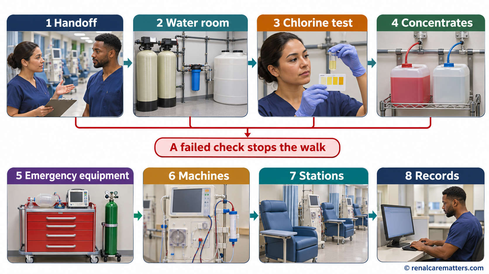
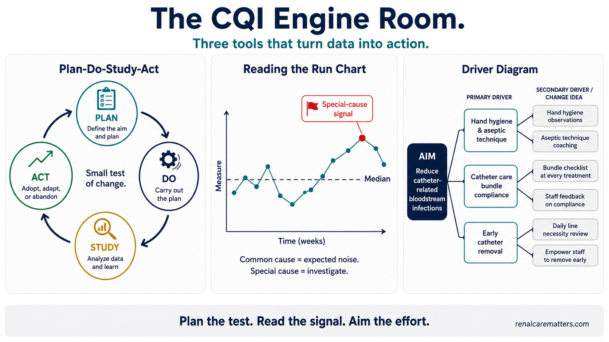
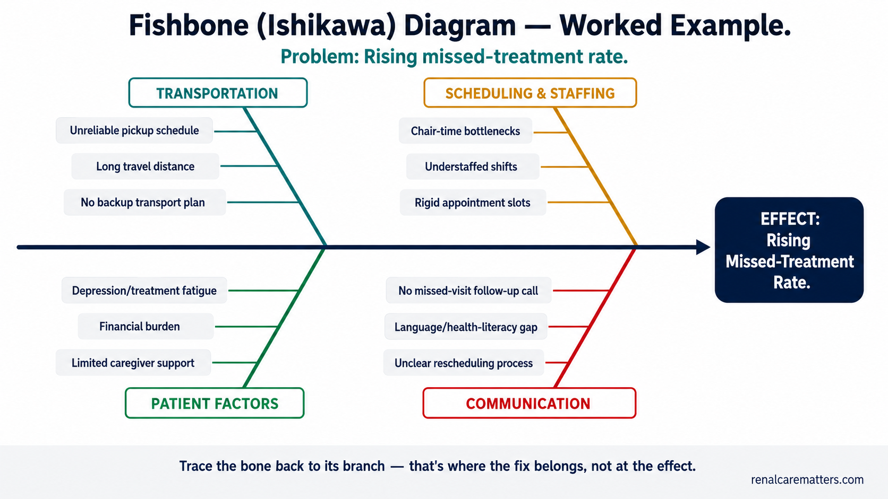
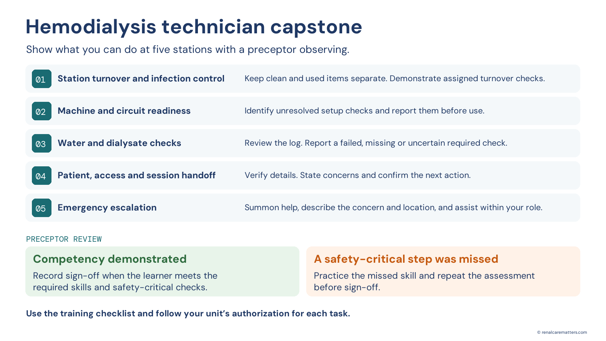
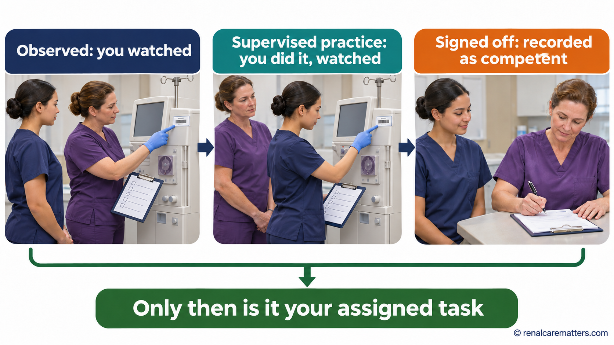
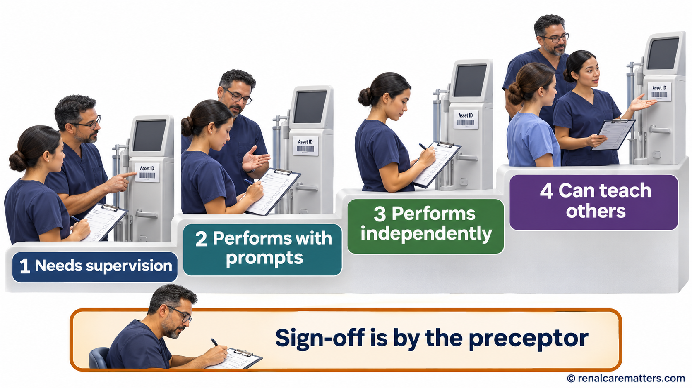

Everything together: readiness checks, urgent reports, records and improvement, five practical stations, the logbook, and the examination blueprint.
PublishedNailathalaGipatikPepalwal:ReferencesMga SanggunianMga TinubdanReng Reperensya:8Audience: Entry-level dialysis technicians and trainees · preceptors, head nurses, and training providersRead timeOras ng pagbasaOras sa pagbasaOras ning pamamasa:
This module is study material for dialysis technicians. It explains why safe practice works the way it does. It does not replace the physician’s orders, the supervising nurse’s direction, your unit’s approved procedures, or the manufacturer’s instructions for use. What a technician may do differs between countries and between facilities, so do only the tasks you are trained, assigned, and signed off to do. Every case is fictional.
Learning objectives
After this module you should be able to
Confirm that the patient, station, equipment, and utilities are ready, and hold the affected work while any exception stays open.
Recognize urgent changes, escalate to the right team, and use check-back to confirm the instructions you receive.
Record objective findings in the right record, and use a near-miss review to find an improvement that can be tested.
Show your assigned competencies across five simulation stations, and tell observation, supervised practice, and formal sign-off apart.
Classroom 2 hSkills lab 4 hSupervised placement 22 h
Pre-testBefore you read, answer the 5 self-assessment questions and note your score. After the module, select New set of questions and compare. The difference is what you learned; the questions you still miss are what to reread.
Start here
The big picture, in plain words
In plain wordsThis last module adds nothing new. It is the road test after the driving lessons: the same rules, now in traffic. It asks you to use everything together, the way a real shift demands: several checks at once, an interruption, a problem that is not yours to solve, and a record that must be right.
The comparison has a limit. A road test happens once, and a dialysis shift tests you every day. If you can verify, pause, report, and document under pressure, you are ready for supervised practice. Supervised practice is where that pattern becomes a habit.
Figure 1 · The pattern behind every module
VerifyThe patient, the order, the station, the machine, and the water.
PauseHold whatever depends on a check that failed.
ReportTell the right person, with the facts and a clear request.
ConfirmRepeat the instruction back.
RecordWhat you saw, did, and were told, with the times.
ReleaseOnly the designated person lifts a hold.
Figure 2 · Key terms for this module
HoldA stop placed on a patient setup, a machine, or the water supply until a problem is cleared.
ReleaseFormal permission from the designated person to resume.
Near missA problem caught before it reached a patient. Reporting it helps the unit improve.
Plan-Do-Study-ActA small test of a change: plan it, try it, study the result, and act on what you learned.
CompetencyA skill you have been observed doing correctly and safely.
It is Monday at 05:55. Mr. Mark Villanueva, 24, a trainee, is assigned to the morning shift. The designated pre-use water check has an out-of-range result, and the log shows no authorized release for the affected system. At Station 2, the first patient states two approved identifiers, and one of them does not match the open treatment record. No patient is connected to the affected system. One colleague offers to reopen the chart, while another is on the telephone about the water result.
Before reading on, decide:
Which activities should stop now, and who needs to know about each problem?
Which facts go into the water log, and which into the patient identification report?
If the chart mismatch is sorted out first, what still has to happen before Station 2 is ready?
Keep your answers in mind. The lesson gives you what you need, and the case review near the end shows one sound response.
Lesson · part 1
Verify readiness and close each hold
Think of a passenger plane before departure. Fuel, crew, doors, cargo, and weather are each checked and signed off by someone. A clean cabin tells you nothing about the fuel. The picture has a limit. An airline has a dispatcher who sees every check on one screen. On a dialysis floor the checks are held by different people, so you name each hold, and each owner, out loud.
A station is ready only when every applicable check is complete. A clean chair, a normal machine display, or a corrected chart settles only its own part of readiness. Use the facility’s checklist, and report each discrepancy before the affected work goes on.1,2,3
Readiness area
Verify within assigned scope
If unresolved
Patient and order
Use two approved identifiers, the authorized record, and the current treatment information.
Stop patient-specific work and tell the supervising nurse. Confirm the correct record and order through the approved process.
Station and equipment
Check turnover, contact time, service status, supplies, and the required pre-use tests.
Withhold the affected station or device, and follow the facility’s clearance process.
Water and dialysate
Confirm the required system checks and release status, and the dialysate checks assigned to you.
Hold the affected starts, and tell the nurse and the designated technical or water-system lead. Report at once whether any patient is connected.
Completion and handoff
Confirm the assigned measurements and records, and name any open issue.
Give a specific handoff, confirm who owns each next step, and record the next action or the clearance still pending.
What goes where. The water log gets the reading, units, sample point, time, affected system, and connection status. Explain the identifier problem quietly and privately, and do not use the unverified chart to record anything about the patient.
If the chart is fixed first. The nurse resolving the identity mismatch closes one hold only. The water hold stays open. Resume work only when the required clinical and technical checks, and the release, are documented.
Lesson · in practice
Opening the shift: one walk-through, in order
In plain wordsThink of a family preparing the house for a fiesta. Nobody sets the table before checking that there is water in the tank and gas in the stove, because without those nothing else can happen. The guests are welcomed last, once everything behind them is ready. Opening a dialysis shift follows the same logic.
The picture has a limit. A fiesta that starts late is only an inconvenience. A station set up on water nobody has tested puts a patient at risk. Earlier modules taught each check separately. On a real morning they happen in one pass, in an order that puts the slowest and most far-reaching checks first. Water comes first because a water problem stops every station. The patient comes last because nothing patient-specific should be touched until the station behind it is ready.

Figure 4. Opening the shift: one walk-through. Numbered path through a dialysis unit showing eight opening-shift checks in order.
Order
Area
What you confirm
Taught in
If it fails, you hold
1
Handoff and logs
Anything on hold from the last shift; machines tagged out; notes left for you
Module 1
The item named, until its owner releases it
2
Water room
System running; gauges and readings within their logged ranges; no leaks or alarms; softener salt present
Module 7
All new starts on that system
3
Chlorine test
Total chlorine at the assigned sample point, with the correct reagent or strip, in date; result, units, time, and your name written at once
Module 7
All new starts on that system
4
Concentrates
Acid and bicarbonate match the orders; labels, expiry, and mixing time checked
Modules 4 and 7
The stations fed by that container or batch
5
Emergency equipment
Cart, defibrillator, oxygen, and suction checked and signed; emergency packs at the stations
Module 10
Nothing starts until the charge nurse knows
6
Each machine
Last disinfection recorded; self-test passed; conductivity and temperature stable; residual disinfectant test negative
Module 6
That machine, tagged
7
Each station
Surfaces disinfected and dry; clean supplies only; sharps container not overfilled; the correct machine for the patient’s hepatitis status
Module 5
That station
8
Circuit
Dialyzer and lines match the order; primed with no air; a reprocessed dialyzer identified by two people and tested for germicide
Modules 6 and 11
That setup
9
Patient
Two identifiers against today’s order; weight, blood pressure, and temperature as assigned; “Any change since last time?”
Modules 1 and 9
Patient-specific work, until the nurse decides
10
Access
Access check as authorized; arm washed; nothing tight on it
Module 8
Use of that access
11
Records
Every check above has an entry with a time and a name; nothing written ahead of time
Modules 1 and 9
Your own signature, until it is true
RememberThe order protects you from the most common opening error: a fully prepared station that sits on water nobody has tested yet.
Stop and reportA check that was not recorded is treated as not done. If you find a blank left by the previous shift, report it. Do not fill it in for them.
Lesson · part 2
Recognize urgency and communicate the next action
Not every problem is an emergency, and the response should match. An open readiness check calls for a hold and a timely report. New severe symptoms, visible dislodgement, heavy bleeding, or a shared utility hazard during active treatment may call for emergency activation at once. Follow the unit’s procedure and stay within your current training and assigned scope. When waiting would increase the risk, call for help before you collect more information.1
RememberUrgent patient symptoms go to the nurse first. Equipment and water problems go to the nurse and to the technical lead. If you are not sure which kind it is, tell the nurse.
Lesson · in practice
Three scenarios, minute by minute
Each table follows one event from the first sign to the record. Read the middle column as the standard you will be assessed against. Read the right-hand column as the shortcut that feels reasonable at the time, and notice why each one fails.
Scenario 1. A failed chlorine test with patients arriving. The unit’s limit for total chlorine is 0.1 milligram per liter (mg/L), the maximum in the standard most units follow.5 The technician on duty is Mr. Ramil Garcia, 31.
Time
Event
What a competent technician does
Common mistake
05:40
The test at the assigned sample point reads 0.3 mg/L
Writes 0.3 mg/L, the time, and the sample point in the log at once
Repeating the test until one passes and writing down only that one
05:41
The reverse osmosis display looks normal
Knows the display does not measure chlorine. The hold stands
Deciding the strip must be wrong
05:42
Two machines are already in self-test
Tells the charge nurse and the water lead: result, point, time, and “no patient is connected”
Telling only a coworker
05:50
The first patients are at the door
Tells them, “We are finishing a safety check on the water. The nurse will update you.”
Seating patients and priming “to save time”
06:05
The water lead takes corrective action and asks for further samples
Tests where asked and records every result, pass or fail
Recording only the final passing result
06:25
The designated person signs the release
Starts setup only after seeing the release entry
Starting on a spoken “should be fine now”
Scenario 2. A pre-weight far above usual. Mrs. Reyes, 63, has a target weight of 58.0 kilograms (kg). She usually arrives about 2.5 kg above it.
Time
Event
What a competent technician does
Common mistake
10:02
The scale reads 64.2 kg
Confirms the scale read zero before she stepped on. Notices her jacket and shoulder bag
Writing 64.2 and moving on
10:03
Re-weighed without jacket, bag, or shoes: 63.4 kg
Records 63.4 kg as the pre-weight, and notes that the first reading included a jacket and bag
Averaging the two readings
10:04
She says her ankles are swollen and she slept sitting up
Asks no leading questions. Notes her exact words, and that she is breathing faster than usual
Scolding her about fluids
10:05
Station 3 is ready
Reports to the nurse before she is seated for setup: weight, gain, her words, what was seen
Entering a fluid removal goal from the arithmetic
10:10
The nurse assesses her and calls the nephrologist
Takes blood pressure as assigned and stays within reach
Suggesting to the patient how much will be removed
Gain above target weight = pre-weight − target weight Example: 63.4 kg − 58.0 kg = 5.4 kg, which is about 5,400 mL of fluid. Her usual gain is about 2.5 kg, so today is more than double. You report this number; the nurse and nephrologist decide how much is removed and how fast.
Scenario 3. A venous pressure alarm with a wet sheet. It is mid-afternoon, and the patient at Station 7 has been dozing.
Time
Event
What a competent technician does
Common mistake
14:31:00
Low venous pressure alarm at Station 7. The patient is dozing under a blanket
Walks to the patient, not to the screen. Lifts the blanket
Pressing reset from the side of the machine
14:31:10
The sheet under the arm is wet and red. The venous needle is half out
Shouts, “Nurse to Station 7, needle out, bleeding.” Gloves on
Going quietly to find the nurse
14:31:20
The nurse arrives within seconds
Follows the unit’s emergency procedure within training and does exactly what the nurse says. Hands over gauze and clamps
Pushing the needle back in
14:33
Bleeding is controlled. The patient is awake and pale
Takes blood pressure as directed. Notes the time and the size of the stain
Stripping the bed before anyone has judged the blood loss
14:45
The patient is stable
Writes the times, what was seen, who was called, and what was done. Completes the incident report as the unit requires
Writing “needle slipped, resolved”
RememberIn all three scenarios the competent technician does the same four things: looks for themselves, writes the real number, tells the right person early, and waits for the person who owns the decision.
Lesson · part 3
Document and improve the process

Figure 5. Improvement runs in small cycles: plan a change, try it, study the result, and act on what you learned.
Keep the record factual: what happened, when, where, what was held, who was told, and what action or clearance followed. Keep the original facts intact by using the approved correction and incident procedures. Use the confidential reporting channels. The water log holds the actual water result and what was done about it. An identification problem goes through the unit’s approved reporting pathway, with an entry in the patient record only when policy and the verified record allow it.6
Near-miss review. A near miss is an error caught before it reached the patient. If staff caught the wrong record before setup and no one was harmed, follow the facility’s near-miss reporting process. The water failure may also need its own quality or incident entry. In the review, ask what helped the team catch both problems, and what made it possible to get close to setup while checks were still open. One example of an improvement is a shift-start checklist that records water release and patient identification as two separate completed checks. A designated lead can then review the proportion of sampled starts that had both recorded before setup or treatment, as applicable, and share the findings with the team.7,8

Figure 6. A fishbone diagram sorts possible causes into groups so that a team looks beyond the first explanation that comes to mind.
Lesson · part 4
Practical assessment · Five simulation stations

Figure 7. Practical assessment map. The scoring grid provides a text equivalent and observable criteria.
Setup for assessors — Use inactive equipment or models, approved local checklists, mock logs, labels and orders, and a scripted patient. Give every trainee the same instructions and test conditions. Build one deliberate exception into each station. Enter a date, evaluator, and scenario version for each attempt.
Scoring — Mark each criterion S for satisfactory, P for needs practice, or N/O for not observed. A station is satisfactory only when every one of its criteria has been shown satisfactorily. If a critical action is missed, stop the unsafe simulation, record what was observed, give focused feedback, and retest that station with a parallel scenario. Complete any criteria not yet observed before sign-off.
Learner ____________________ Evaluator ____________________ Date __________ Scenario version __________
Station
Observable criteria
Ratings in order
Result / initials
1 · Turnover and infection prevention
1. Performs hand hygiene and selects task personal protective equipment (PPE). 2. Separates used and clean equipment and routes mock waste correctly. 3. Critical. Holds the station until wet contact time and release requirements are met.
1. ___ 2. ___ 3. ___
__________
2 · Machine and circuit readiness
1. Traces the blood and dialysate paths on the training machine. 2. Checks simulated supplies against the order and instructions for use (IFU). 3. Critical. Withholds the machine after a failed self-test and reports the exact issue.
1. ___ 2. ___ 3. ___
__________
3 · Water and dialysate quality
1. Identifies the correct sample point, unit and applicable action level on the mock log. 2. Distinguishes water quality, concentrate identity and dialysate checks. 3. Critical. Holds affected starts after an abnormal result and identifies the authorized release pathway.
1. ___ 2. ___ 3. ___
__________
4 · Patient and access verification
1. Critical. Uses two approved identifiers and holds patient-specific work when a mismatch appears. 2. Reviews the mock access finding and reports it within scope. 3. Gives a concise handoff with next-step ownership and check-back.
1. ___ 2. ___ 3. ___
__________
5 · Emergency escalation
1. Critical. Immediately summons help for a simulated serious symptom or bleeding. 2. Gives location, onset and connection status and follows an assigned support role. 3. Documents the observed findings, notification and handoff.
1. ___ 2. ___ 3. ___
__________
Remediation record
Station
Criterion needing practice
Feedback and practice action
Retest date / result
Evaluator initials
______
____________________
____________________
____________________
______
______
____________________
____________________
____________________
______

Figure 8. Observed, supervised, signed off. Three steps of learning a skill: observed, supervised practice, and signed off.
Lesson · in practice
Rate yourself before the assessor does
A driver’s license road test is scored on what the examiner sees, not on what you meant to do. The five stations work the same way: they are scored on what the assessor sees you do. Knowing how the scoring works takes away the surprises.

Figure 9. Four levels of competence. Four steps from needing supervision to teaching others.
Figure 10 · How the practical stations are scored
Three ratingsEach criterion is marked satisfactory, needs practice, or not observed.
All or nothing per stationA station is passed only when every one of its criteria is satisfactory. Two out of three is not a pass.
Critical stepsEach station has at least one critical step. Missing it stops the simulation.
No averagingA strong station does not make up for a weak one.
RetestAfter feedback and practice, you repeat the station with a different scenario, so memorizing the first one does not help.
Say it aloudThe assessor can score only what is seen or heard. Speak your checks as you do them.
Use the grid below a week before the assessment. Rate each skill honestly, then ask your preceptor to rate you on the same grid, and compare the two.
Level
Name
What it looks like
1
Needs supervision
Someone must stand beside you and correct your steps
2
Performs with prompts
You complete it, but need a reminder for a step or for the order
3
Performs independently
Correct, complete, in order, without prompts, and you can say why each step is there
4
Can teach others
Level 3, and you can explain it and spot errors when a newer trainee does it
Core competency
Module
My level
Preceptor’s level
Two-identifier check against today’s order
1
___
___
Hand hygiene, glove changes, and station turnover with full contact time
5
___
___
Machine setup, priming, and pre-treatment checks
6
___
___
Total chlorine test, water log, and placing a hold
7
___
___
Concentrate check against the order
7
___
___
Access observation and protection, as authorized
8
___
___
Weight, vital signs, rounds, and charting at the time
9
___
___
Alarm response: patient, access, lines, screen
9
___
___
Emergency call, assigned role, and time log
10
___
___
Dialyzer reprocessing steps and tests, if the unit reuses
11
___
___
Factual report with a clear request and check-back
All
___
___
RememberLevel 3 on every row is the target for sign-off. Where you and your preceptor differ by a level or more, ask to be watched doing that task. The gap is usually a step you do not know you are skipping.
Lesson · part 5
Clinical logbook and completion review
Fill in the log during placement, and have your preceptor verify each entry. Use only approved de-identified information. Record whether each activity was observed, simulated, or performed under supervision. The preceptor’s verification records what took place. Formal authorization for specific patient-facing tasks follows the facility’s own requirements.
Date / placement area
Module and activity
Observed / simulated / performed under supervision
Outcome or feedback
Next action
Preceptor initials
__________
__________
__________
__________
__________
__________
__________
__________
__________
__________
__________
__________
__________
__________
__________
__________
__________
__________
Completion review — Confirm the course requirements with the program. Review the five signed station results, the remediation entries, the placement hours, and the validated logbook. Record any requirement still outstanding and the person responsible for following it up.1
Lesson · part 6
Recommended cumulative exam blueprint
The course plan proposes a 100-item cumulative written exam with an 80% target, alongside the observed stations and the clinical logbook. The table is a blueprint for writing the exam. The Module 12 self-assessment included here contains 15 review questions.
Content area
Planned questions
Review
Role, patient identification, communication and kidney failure treatment context
20
Modules 1–3
Dialysis principles, fluid and adequacy
15
Module 4
Dialysis infection prevention and waste
15
Module 5
Equipment, dialysate and water quality
20
Modules 6–7
Access, treatment workflow and emergencies
20
Modules 8–10
Reprocessing, equipment quality and integrated decision-making
10
Modules 11–12
Total
100
Lesson · in practice
Studying for the cumulative examination
The written examination samples every module in the proportions of the blueprint. The practical point is to spend your study time in the same proportions, then move extra hours toward your weakest area.
Hours for an area = total study hours × (questions in that area ÷ 100) Example with 20 hours: Modules 1 to 3, 20 questions, 4 hours. Module 4, 15 questions, 3 hours. Module 5, 15 questions, 3 hours. Modules 6 and 7, 20 questions, 4 hours. Modules 8 to 10, 20 questions, 4 hours. Modules 11 and 12, 10 questions, 2 hours. Check: 4 + 3 + 3 + 4 + 4 + 2 = 20 hours. Target: 80% of 100 questions = 80 correct, so no more than 20 may be missed.
Figure 11 · A study method that works for this examination
Retake the self-assessmentsAll twelve, closed book. Mark every miss and every lucky guess.
Sort your missesYou did not know the fact, you misread the question, or you chose a tempting unsafe action.
Rebuild from the tablesCover the right-hand columns of the troubleshooting tables and say them from memory.
Redo every calculationFluid gain, removal rate, percentages, and dilution, each on paper with units.
Explain aloudTeach one topic to a coworker in two minutes. The gaps show up fast.
RestSleep before the examination does more for you than one last late night of reading.
Question pattern
How to approach it
“What should the technician do first?”
Look for patient safety and calling the nurse before measuring, charting, or fixing
An option where the technician changes a setting, gives something, or decides the cause
Almost always outside scope, so almost always wrong
An option that resets, repeats a test until it passes, or waits for handoff
The tempting shortcut; rarely the answer
A calculation
Write the units on every line. Check that the answer is a sensible size
Two answers both look right
Choose the one that happens earlier in time, or that reaches the person who owns the decision
Lesson · in practice
After sign-off: the first 90 days and staying competent
A new driver who has just passed the test can drive, but has not yet driven through a flood or at night in the rain. Sign-off is similar. It means you were observed doing each skill correctly. It does not mean you have met every situation. The first three months turn checked skills into steady habits. The plan below is a model to agree with your supervisor, who sets the actual targets.
By day
Consolidate
Evidence in your logbook
Review with
30
The routine: opening walk-through, setup and priming, turnover, and charting, done correctly without prompts on the machine model you were signed off on
Opening checks completed on your own; no blank entries; any hold you placed and how it was released
Preceptor: one observed opening and one observed turnover
60
The exceptions: alarms, failed tests, unusual weights, access changes. Speed comes after accuracy
At least a few entries of the form “what I saw, whom I told, what happened next”; one near-miss report if one occurred
Charge nurse: feedback on the quality of your reports
90
The wider unit: a second machine model if the unit has one, the water room routine, an emergency drill in an assigned role
Additional sign-offs; drill attendance; one improvement you suggested
Supervisor: review of the self-rating grid and goals for the next year
Figure 12 · Staying competent after the first year
Regular reassessmentUnits recheck core skills at intervals they set, commonly once a year, and whenever a new machine, dialyzer, or procedure arrives.
Incident learningRead the unit’s incident and near-miss summaries. Ask what changed afterward.
DrillsTake a different role each time: caller, runner, recorder.
LogbookKeep it going after training: the date, the task, the machine model, anything unusual, and who verified it.
CertificatesKeep basic life support current, and know the expiry date of every certificate you hold.
QuestionsAn experienced technician still asks. “I have not done this on this model” is a professional statement.
RememberCompetence belongs to a task, a machine model, and a date. If any of the three changes, ask to be checked again before you work alone.
On the floor
Real situations: problems and solutions
These are fictional but typical. For each one, cover the answer, decide what you would do, then compare. Where a step depends on local rules, your unit’s procedure and your supervisor’s direction come first.
Everything at once
What you see
At 05:50 you have a patient at the door, a machine showing a failed test, and a water log that is not yet signed.
What is likely going on
All three are yours to notice, but not all three are yours to solve.
What to do
Deal with safety first: tag the machine, tell the nurse about the machine and the unsigned water log, then verify the patient’s identity.
Why it matters
Ordering tasks by risk, not by who is loudest, is the core skill of this job.
Two instructions that disagree
What you see
The nurse tells you to prepare station 4. A doctor passing by tells you to use station 7 instead.
What is likely going on
One of them may not know what the other said.
What to do
Tell each of them what the other said, and ask them to agree on one. Do not choose for them.
Why it matters
Conflicting instructions that a technician settles quietly are a classic source of errors.
A near miss nobody else saw
What you see
Before the first patient was connected, you noticed that you had connected the wrong concentrate, and you fixed it.
What is likely going on
No harm occurred, and nobody would know if you said nothing.
What to do
Report it through the unit’s near-miss process.
Why it matters
The next person may not notice in time. Near-miss reports are how a unit fixes the cause, such as look-alike containers.
Handoff in a hurry
What you see
At the change from the morning to the afternoon shift, the outgoing technician says, “All good, see you tomorrow,” and heads for the door.
What is likely going on
You do not know what is on hold or what is still pending.
What to do
Before the technician leaves, ask three questions: anything on hold, anything unfinished, and anything I should watch.
Why it matters
Most information is lost at shift change.
Field notes
Verify, pause, report, confirm, record. When in doubt, go back to the first word.
A hold stays in place until the designated person releases it, however long that takes.
Being signed off for a skill on one machine model does not sign you off on another.
Update your logbook every day. It is your evidence of training.
Case review
Back to the case: Two holds at shift start
Case debrief.What stops, and who knows. Two separate holds start at once. Hold every start that depends on the affected water system. Hold patient-specific work at Station 2, where the identifier does not match. Tell the supervising nurse about both problems, and tell the designated water-system lead about the water result.
Example handoff. “First-shift starts are on hold for the affected water system. The 05:55 result is above the action level, and the log has the actual result, sample point and units. No patient is connected. I also held Station 2’s patient-specific setup because one approved identifier did not match the open record. Please confirm who will resolve each hold and where clearance will be recorded.” Notice that each hold has its own sentence and its own question about ownership. Repeat back the actions you are assigned, and name who owns each decision.4
Skills lab · with your preceptor
Skills checklist:
Your preceptor rates each step as satisfactory, needs practice, or not observed. Steps marked Critical must all be satisfactory before sign-off. This checklist supports supervised learning; your unit’s own procedure and competency form are the authority. A printable version of every checklist is on the trainer page.
CriticalCompletes the full opening walk-through in the taught order on the training unit, records each check as it is done, and places a hold on a planted failure.
Works through a timed scenario card aloud, stating at each time point the action, the person to be told, and the record to be made.
Completes the self-rating grid, compares it with the preceptor’s ratings, and writes one practice goal for each row below level 3.
Self-assessment
Check your understanding
Each visit draws 5 questions at random from this module’s 22-question bank. Choose the single best answer for each, then select Check answers; an explanation appears under the best answer. Select New set of questions for a different mix. A good target is 4 of 5 on two different sets. Nothing you select is sent anywhere; scoring happens in your browser.
International Organization for Standardization (ISO). (2024). Preparation and quality management of fluids for haemodialysis and related therapies. Part 3: Water for haemodialysis and related therapies (ISO 23500-3:2024).
Educational study material for dialysis technicians. It does not replace physician orders, the supervising nurse’s direction, approved unit procedures, manufacturer instructions, DOH licensing requirements, or supervised training.